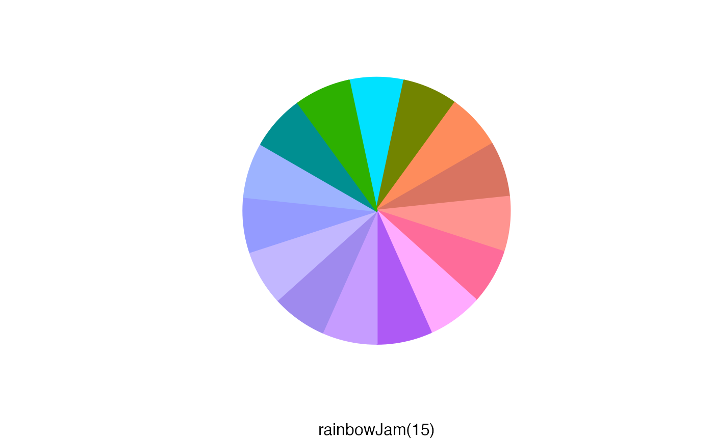
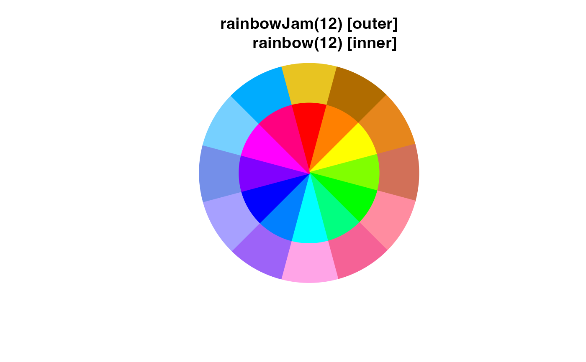
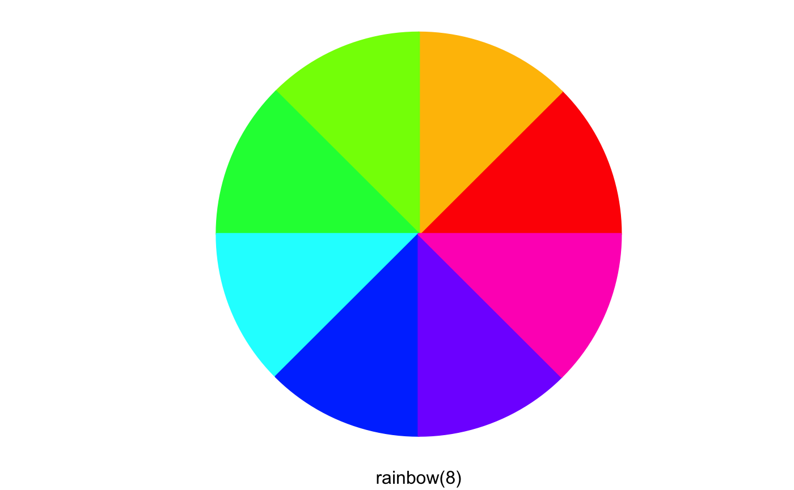
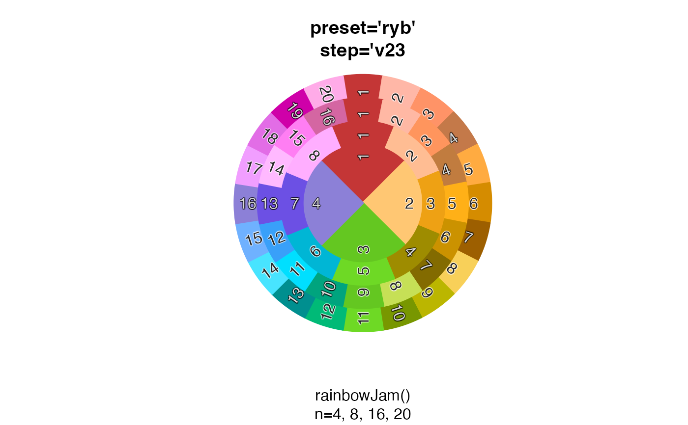
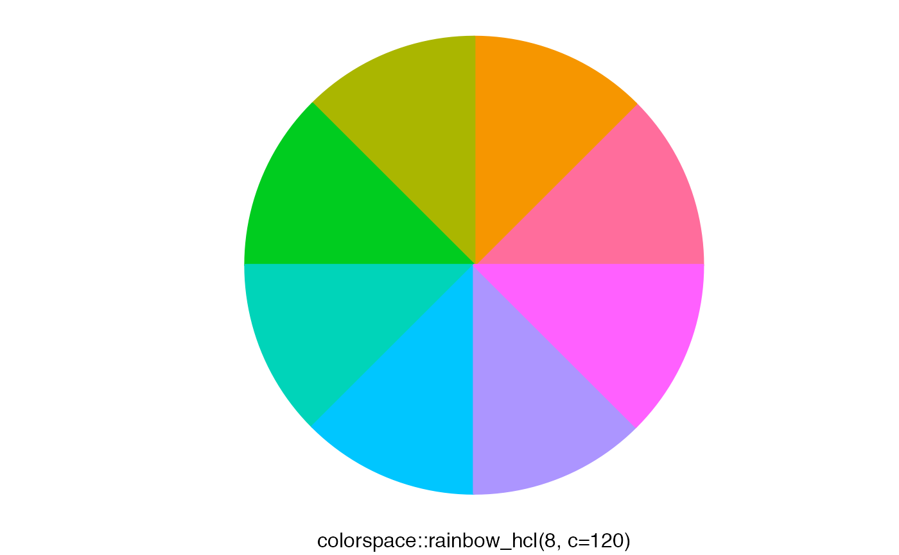
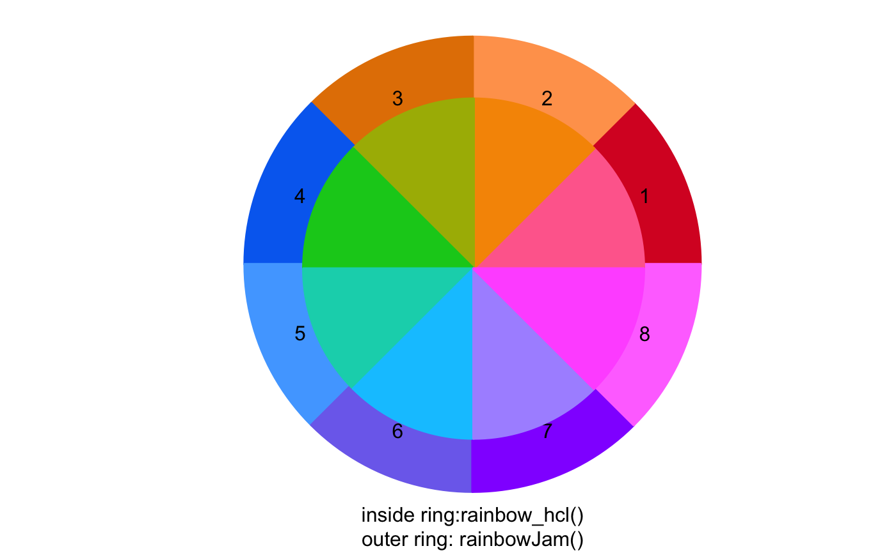

Show colors spread around a pie chart
color_pie(
colors,
border = colors,
lwd = 2,
radius = 1.1,
label_radius = radius * 0.65,
add = FALSE,
init.angle = NULL,
clockwise = TRUE,
...
)vector of R colors.
vector of R colors used to draw a border around
each pie wedge. By default it uses input colors.
numeric value used to define the line width of the pie wedge borders.
numeric value representing the radius of the
overall pie chart, where radius=1 represents the default
radius used by graphics::pie(). The default is radius=1.5
in order to use more of the output plot size.
numeric value indicating the radius used for labels, intended to allow labels to appear inside each pie wedge.
logical indicating whether to draw the pie chart onto the existing plot device, without creating a new plot.
additional arguments are passed to graphics::pie().
This function simply displays colors in a pie chart format.
If the input is a list, each list is used to produce
layers of a pie chart, in order to help compare colors
from each vector in the list.
Other colorjam display:
showDichromat()
color_pie(rainbowJam(15, nameStyle="none"),
sub="rainbowJam(15)")

n <- 12;
color_pie(list(
rainbowJam(n),
rainbow(n)),
main="rainbowJam(12) [outer]\n rainbow(12) [inner]")

n <- 15
color_pie(list(
rainbowJam(n),
rainbow_hcl(n, c=85)),
main="rainbowJam(15) [outer]\nrainbow_hcl(15) [inner]")

rainbow_list <- lapply(4*c(5,4,2,1), function(n){
rainbowJam(n, preset="ryb", step='v23', nameStyle="n");
});
color_pie(rainbow_list,
main="preset='ryb'\nstep='v23",
sub="rainbowJam()\nn=4, 8, 16, 20")

rainbow_list2 <- lapply(4*c(5,4,2,1), function(n){
rainbowJam(n, nameStyle="n");
});
color_pie(rainbow_list2,
main="default settings",
sub="rainbowJam()\nn=4, 8, 16, 20")

rainbow_list3 <- lapply(4*c(5,4,2,1), function(n){
rainbowJam(n, preset="dichromat", step="v23", nameStyle="n");
});
color_pie(rainbow_list3,
main="preset='dichromat'\nstep='v23'",
sub="rainbowJam()\nn=4, 8, 16, 20")
